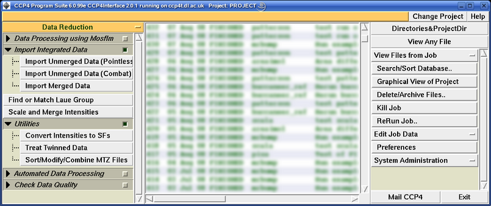

See also the tutorial worksheet.
The Main Window of CCP4i looks like:

It is composed of windows, menus and buttons. The most important of these are:
CCP4i will run most frequently used programs from the CCP4 suite, but is organised around the idea of tasks rather than programs. Usually one task corresponds to one program but sometimes more than one program may be required to perform a task or a program may be used in different tasks.
The tasks are grouped into modules according to the stage in the crystallographic process they are used in (e.g. Density Improvement and Refinement are two separate modules). There are also utility modules which contain tools which apply to the three main types of data (i.e. Map & Mask Utilities, Reflection Data Utilities and Coordinate Utilities), and for graphics, viewing and Clipper. Then there is the Program List, which contains an alphabetical list of all the CCP4 programs represented in CCP4i.
Tasks may be further grouped into folders within a module. These are used to group together sets of tasks which may perform similar functions, or which are otherwise related to each other.
CCP4 reflection data is held in MTZ files. MTZ files are binary, i.e. they cannot be viewed with the more command or with an ASCII viewer. However, they can be easily listed at the command line with:
See CCP4 documentation for options to mtzdmp. Within CCP4i, MTZ files can be viewed by clicking on a View button next to the file name or by selecting the file from View Any File or View Files from Job.
MTZ files consist of 2 parts:
Records of reflection data in the MTZ format may hold any number of pieces of data. Equivalent pieces of data in different records are referred to as columns:
column
|
|
0 0 2 626.00 112.00 3.00
0 0 4 9111.00 168.00 22.00
0 0 6 513.00 146.00 20.00 --- record
0 0 8 2610.00 52.00 10.00
0 0 10 ? ? 11.00
0 1 1 1200.00 38.00 13.00
0 1 2 2244.00 55.00 21.00
0 1 3 2163.00 36.00 6.00
0 1 4 6057.00 82.00 13.00
0 1 5 3698.00 46.00 16.00
The columns are given names in the MTZ file header so that they can be identified:
* Column Labels :
H K L FP SIGFP FreeRflag
When running the programs directly, these names are used in the LABIN keyword:
LABIN F=FP SIGF=SIGFP FREE=FreeRflag
The names before the = sign are the names that appear in the program documentation. The names after the = sign are the names that appear in the file.
In CCP4i, these column assignments are made via pull-down menus, after the MTZ filename is entered.
The header contains more information which is useful for organising your data. For instance, each column has a defined type. For the above example, the types are:
* Column Types :
H H H F Q I
Column Types are used to provide an extra check that the user input assignment for a requested program label is of the correct type. For more information, see COLUMN TYPES.
The main file header also contains "dataset" properties. The columns of data are grouped into distinct "datasets". For example, a measurement and its standard deviation must be part of the same dataset. All information about a derivative makes up one data set distinct from the equivalent columns for the native which may also be present in the file. A dataset is identified by a "project name", which specifies a particular structure determination, a "crystal name", which is essentially a single crystal form, and a "dataset name". Normally, all datasets in a file will have the same "project name" and different "dataset names". Each dataset will have its own cell dimensions and wavelength. Dataset information comes into its own for Data Harvesting. For more information on project, crystal and dataset names, see MTZ FORMAT.
It is essential to have correct column types for PHASES and ANOMALOUS differences:
In addition two special data types are used to signal that you are preparing data for translation functions of various types. They are:
Back to the index.